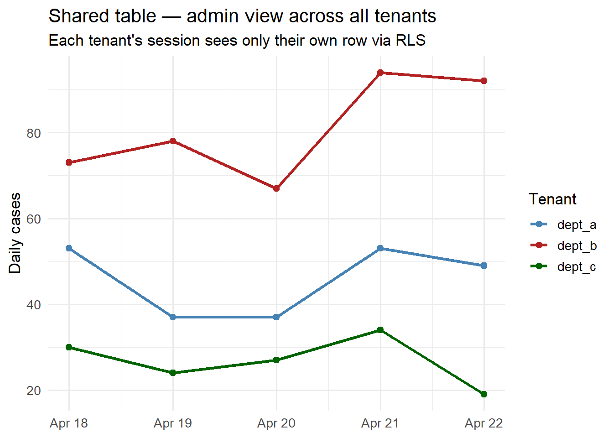

Multi-Tenant Architecture: Serving Multiple Health Departments on One Platform
Row-level security, schema isolation, and cost allocation across clients who must not see each other’s data. Skill 11 of 20.
business skills
multi-tenancy
database
architecture
software engineering
Author
Jong-Hoon Kim
Published
April 24, 2026
1 The scaling inflection point
Your first client is running on a dedicated instance — one database, one API container. You sign a second client. Do you:
Option A: Clone the entire stack — two separate databases, two API deployments, two sets of infrastructure.
Option B: Add a tenant_id column to every table and run everything on shared infrastructure.
Option A is simple but costs 2× at two clients, 10× at ten. Option B is a multi-tenant architecture (1,2): shared infrastructure, logically isolated data. It is the model used by every successful SaaS business.
Three multi-tenancy isolation models on the security vs. cost spectrum. Most digital twin businesses start at Row-Level Security and move to Schema Isolation if compliance requires it.
3 Row-Level Security in PostgreSQL
The recommended starting point: add tenant_id to every table, then use PostgreSQL’s Row-Level Security (RLS) to enforce that each database session can only see its own tenant’s rows.
-- 1. Add tenant_id to existing tablesALTERTABLE observations ADDCOLUMN tenant_id TEXT NOTNULL;ALTERTABLE model_states ADDCOLUMN tenant_id TEXT NOTNULL;ALTERTABLE forecasts ADDCOLUMN tenant_id TEXT NOTNULL;-- 2. Enable RLS on each tableALTERTABLE observations ENABLEROWLEVEL SECURITY;ALTERTABLE model_states ENABLEROWLEVEL SECURITY;ALTERTABLE forecasts ENABLEROWLEVEL SECURITY;-- 3. Create policy: session variable must match tenant_idCREATE POLICY tenant_isolation ON observationsUSING (tenant_id = current_setting('app.current_tenant'));CREATE POLICY tenant_isolation ON model_statesUSING (tenant_id = current_setting('app.current_tenant'));-- 4. Set the tenant on connectionSET app.current_tenant ='district_health_dept';-- Now ALL queries on this connection see only that tenant's data
The API sets the tenant variable from the JWT claim before executing any query. Each database connection is locked to one tenant.
4 Simulating RLS in R
# Simulate the multi-tenant data store in Rall_observations <-data.frame(tenant_id =c(rep("dept_a", 5), rep("dept_b", 5), rep("dept_c", 5)),date =rep(Sys.Date() -4:0, 3),location_id =c(rep("loc_1", 5), rep("loc_2", 5), rep("loc_3", 5)),new_cases =c(rpois(5, 45), rpois(5, 80), rpois(5, 30)))# Simulate the RLS filter — what each tenant seesquery_as_tenant <-function(data, tenant) { data[data$tenant_id == tenant, setdiff(names(data), "tenant_id")]}# Each department sees only its own datacat("dept_a sees:\n"); print(query_as_tenant(all_observations, "dept_a"))
library(ggplot2)library(dplyr)# Show what an admin (all-tenant) view looks likeall_observations |>ggplot(aes(x = date, y = new_cases, colour = tenant_id, group = tenant_id)) +geom_line(linewidth =1.2) +geom_point(size =2) +scale_colour_manual(values =c(dept_a ="steelblue",dept_b ="firebrick",dept_c ="darkgreen"),name ="Tenant") +labs(x =NULL, y ="Daily cases",title ="Shared table — admin view across all tenants",subtitle ="Each tenant's session sees only their own row via RLS") +theme_minimal(base_size =13)

Per-tenant case counts in a shared multi-tenant store. RLS ensures dept_a never sees dept_b’s data, even though they share the same physical table.
5 Tenant onboarding workflow
When a new health department signs a contract, the onboarding script does:
onboard_tenant <-function(con, tenant_id, contact_email) {# 1. Insert tenant record DBI::dbExecute(con,"INSERT INTO tenants (tenant_id, contact_email, created_at) VALUES ($1, $2, NOW())",params =list(tenant_id, contact_email) )# 2. Create API key (hashed) raw_key <-paste0(sample(c(letters, 0:9), 32, replace=TRUE), collapse="") key_hash <- digest::digest(raw_key, algo ="sha256") DBI::dbExecute(con,"INSERT INTO api_keys (tenant_id, key_hash, created_at) VALUES ($1, $2, NOW())",params =list(tenant_id, key_hash) )# 3. Seed initial model state# ... insert baseline EnKF posterior for this tenantmessage(sprintf("Tenant '%s' onboarded. API key: %s", tenant_id, raw_key)) raw_key # return only once; never stored in plaintext}
The key rule: the raw API key is shown only at creation and never stored — only its hash is in the database, like a password.
6 Cost attribution
With shared infrastructure, you need to attribute costs to tenants for:
Usage-based billing: charge by API call, EnKF run, or data stored
Resource planning: identify which tenants drive the most compute
Add a usage_events table:
CREATETABLE usage_events ( tenant_id TEXT NOTNULL, event_type TEXT NOTNULL, -- 'api_call', 'enkf_run', 'report_gen' occurred_at TIMESTAMPTZ NOTNULLDEFAULT NOW(), duration_ms INTEGER, cost_units NUMERIC-- whatever unit you bill in);SELECT create_hypertable('usage_events', 'occurred_at');
Monthly billing is then a simple aggregate query per tenant.
7 References
1.
Guo CJ, Sun W, Huang Y, Wang ZH, Gao B. A framework for native multi-tenancy application development and management. Proceedings of the 9th IEEE International Conference on E-Commerce Technology. 2007;551–8. doi:10.1109/CEC.2007.25
2.
Fowler M. Patterns of enterprise application architecture. Boston, MA: Addison-Wesley; 2002.